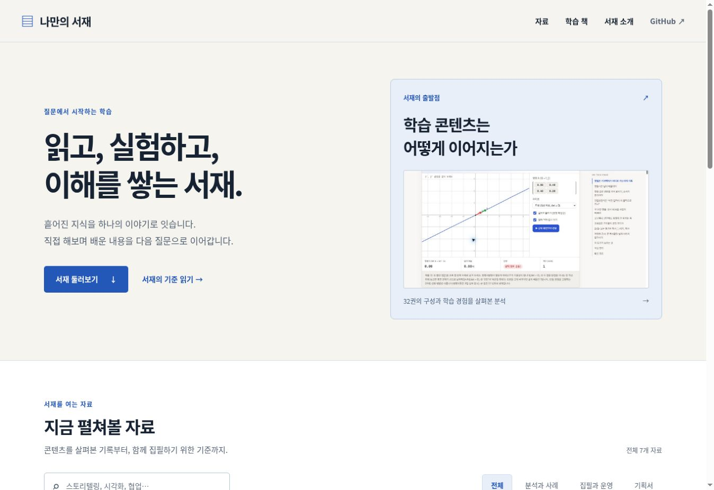

VALIDATION / 2026-10-07
검증 결과와 남은 일
참조 사이트 조사와 새 서재 검증을 구분해 기록합니다.
원 사이트에서 확인한 범위
| 검사 | 결과 | 한계 |
|---|---|---|
| 책·포털 | 출간 32권 소개 화면과 포털 14개 경로 열람 | 모든 장을 브라우저로 정독한 것은 아님 |
| 페이지 수집 | 648 URL 중 644 성공, 4개 HTTP 404 | 수집 시점의 응답·정적 HTML 기준 |
| 장 URL | 정상 응답 594개 | 중앙 카탈로그의 합계 584와 차이 있음 |
| 실험 앵커 | 3,903개 모두 페이지·앵커 존재 | 전체 실험 동작·수치 정확성 검증 아님 |
| 대표 조작 | RAG 분할·퀴즈, 광자 에너지, 수율 조사, 행렬 투영 | 대표 경로의 입력과 결과 확인 |
| 3D | 픽셀 분해 입력은 바뀌나 캔버스 미표시 | 조사 브라우저에서 WebGL 비활성 로그 확인 |
근거: 전체 목록 · 직접 조작 기록 · 화면 출처. 참조 사이트의 모든 실험이나 학습 효과를 검증했다는 뜻은 아닙니다.
새 서재에서 확인한 것
python3 scripts/validate.py로 12개 HTML 문서의 내부 파일·앵커·중복 ID, JSON, 카탈로그 동기화, Python 함수 길이, 조사 데이터의 항목 수를 검사했으며 오류는 0개입니다.
단위 테스트 8개가 통과했습니다. 링크·앵커·카탈로그 참조 오류의 탐지, 책이 없을 때의 안내, 공개된 책에만 읽기 링크 제공, 안전한 URL과 문자 처리, 반복 생성 시 동일한 결과를 확인합니다.
| 실제 사이트 동작 | 확인 결과 |
|---|---|
| 메인페이지 | HTTPS로 정상 열람, 조사 이미지 표시, 자료 7개 표시 |
| 검색 “시각화” | 분석 리포트와 운영 기준, 2개 자료 표시 |
| 기획서 분류 | 책 기획서와 장·실험 기획서, 2개 자료 표시 |
| 결과 없는 검색·초기화 | 빈 결과 안내 후 전체 7개 자료로 복귀 |
| 문서 이동 | 메인 → 분석 리포트 → 서재 복귀 확인 |
| 조사 목록 | “404만” 필터에서 4 / 648 페이지 표시 |
| 화면 폭 | 1348px 화면에서 문서 폭도 1348px, 가로 넘침 없음 |
최초 문서 작성 당시에는 로컬 file: 주소가 브라우저 정책에 막혀 렌더링을 확인하지 못했습니다. 이번에는 공개된 HTTPS 주소에서 위 동작을 직접 확인했습니다. 모바일 실기기·화면 읽기 프로그램은 테스트하지 않았으며, 작은 화면용 CSS 규칙과 접근성 속성은 코드로 확인했습니다.
코드와 원자료의 검사 결과는 검증 기록에 보관합니다. 브라우저 확장 프로그램의 통신 오류는 페이지 자체 오류와 구분합니다.
GitHub Pages 공개
ljd6805/my-bookshelf의 main 브랜치 루트에서 자동 배포하도록 설정했습니다. 최초 배포 실행은 pages-build-deployment #1이며 성공 상태를 확인했습니다.
공개 서재 열기. 최초 화면·동작 확인의 대상 커밋은 7e30d62f0b7f834bd52f0f6c0f8bb2433540a86c입니다. 이후 변경 이력은 저장소에서 확인할 수 있습니다.

배포 설정과 수정 절차는 서재 구성과 책 추가 방법, 현재 인계 상태는 작업 상태에 기록합니다.
서가 큐레이션과 책 사이 링크 · 2026-10-08
- 구조 확인:
validate.py오류 0개,build_catalog.py --check통과, 서가 단위 테스트(큐레이션 4개·교차 링크 검사 1개 추가)와 네 책의 책별 테스트 통과. - 동작 확인: Chromium으로 1280·390·320px에서 큐레이션 구역의 가로 넘침 없음, 단계·개념 펼치기, 머리말 "읽기 흐름" 링크 표시, 검색어 "dot product"로 AI Book과 벡터와 행렬 책이 걸러지는 것을 확인했습니다. 책 사이 새 링크 6곳을 직접 눌러 도착 장의 제목을 확인했습니다.
- 수치 정확성: 경로 카드의 총 시간은 단계 시간의 합으로 자동 계산합니다. 단계 시간은 각 책이 밝힌 장 읽기 시간을 옮긴 값입니다.
- 학습 효과: 새 읽기 경로 3개를 실제 독자가 따라가 본 기록은 없습니다(L4 미확인). Safari·Firefox·실기기·화면 읽기 프로그램도 확인하지 않았습니다.
- 노선도·지식 지도 개편(2026-10-08): Chromium 1280·390·320px에서 가로 넘침 없음. 주소 #path-…로 해당 노선 열기, 탭 클릭과 좌우 화살표 전환, 정거장 선택 시 해당 단계만 표시(
aria-current="step"), 지도에서 개념 클릭·키보드 초점으로 카드 전환과 선 강조, 720px 이하 지도 숨김과 카드 13개 표시, JavaScript를 끈 상태에서 노선 4개·정거장 21개가 모두 보이는 것을 확인했습니다. 지도 글자가 겹치지 않는지는 단위 테스트로 검사합니다. 화면 읽기 프로그램으로 SVG 지도를 읽어 보지는 않았습니다. - 책 추가 규칙 검사(2026-10-08): 새 규칙을 넣기 전 main에서 검사기를 돌리면 LLM 시스템 책이 "공통 개념 1개"와 "들어오는 링크 없음"으로 걸렸고, 연결을 채운 뒤 0개가 되었습니다. 규칙 단위 테스트 4개(완전히 연결된 서가 통과, 새 책의 다섯 항목 각각 실패, 기획 중인 책 제외, 없는 앵커·중복 검출)와 다섯 권 지도 겹침 검사가 통과했습니다. 1280px에서 다섯 권 지도와 노선 전환을 Chromium으로 확인했습니다. LLM 시스템과 확률과 통계가 같은 색(sage)인 점은 서가 진열 정리 PR에서 바뀔 예정입니다.
지식 지도 노선표 개편 · 2026-10-08
- 구조 확인:
validate.py오류 0개, 서가 Python 단위 테스트 44개(지도 3개·노선 분야 묶음 1개·개념 이름 길이 1개 새로 작성)와 JavaScript 4개 통과. 가상 30권·60개 개념도 지도 계산 한도 없이 그려지는 것을 테스트로 확인. - 동작 확인: Chromium 1280·390·320px에서 페이지 가로 넘침 0px, 개념 이름 클릭과 Enter로 카드 열기·닫기,
aria-expanded갱신, 분야 단추(지식관리 → 6줄, 빈 분야 묶음 숨김)와 되돌리기,#concept-memory-hierarchy로 열린 채 시작, 분야 단추 하나로 노선 카드(지식관리 → 1개, 선택된 노선이 가려지면 첫 노선으로 이동)와 지도 줄이 함께 걸러짐, 휴대폰에서 카드가 화면 폭 안에 머무는 것 확인. 가상 27권 목업으로 칸이 줄고 표 안에서만 미는 것 확인. - 남은 확인: 실제 AI 엔지니어링 시리즈가 들어온 뒤 줄 수와 분야 묶음이 읽기 좋은지 다시 봅니다. 화면 읽기 프로그램으로 표 머리 읽기 순서는 확인하지 못했습니다.
팩트·출처 검수 · 2026-10-08
2026-10-08 사용자는 서재의 그라운드룰로 팩트·출처 검수를 정했습니다. 책을 새로 만들거나 크게 고친 뒤에는 그 책을 쓴 에이전트가 아닌 새 에이전트(GPT든 Claude든 다른 세션)가 책을 검수합니다. 쓴 사람은 자기 오류를 같은 가정으로 다시 읽기 쉽기 때문에, 검수는 처음 읽는 눈으로 해야 합니다.
| 검사 항목 | 검수자가 확인하는 것 |
|---|---|
사실 주장 (facts) | 본문의 주장이 출처와 맞는지, 시점이 지난 정보가 없는지 |
수식·수치 (numbers) | 식을 다시 유도하고 예시 숫자와 단위를 손으로 계산 |
실험 계산 (experiments) | 대표값·경계값을 책 코드와 따로 계산해 화면 결과와 대조, 실제 계산·시나리오·비유 구분이 맞는지 |
용어 (terms) | 정의와 한영 용어가 표준 문헌과 맞는지, 책 안에서 일관된지 |
출처 링크·인용 (sources) | 링크가 열리는지, 인용한 내용이 원문에 있는지, 확인일이 있는지 |
절차. 집필 에이전트가 책을 마치면 검수 에이전트를 새로 할당합니다. 검수자는 결과를 books/주제/docs/fact-review.html에 검수 기록 양식대로 남기고, 집필 측이나 검수자가 오류를 고친 뒤 회차 결과를 passed 또는 fixed로 닫습니다. 검수 기록이 닫히기 전에는 책을 published로 올리거나 병합하지 않습니다. 기록에는 검수자·집필자·날짜·범위·다섯 항목의 상태·발견과 수정·확인하지 못한 것이 들어갑니다.
자동 검사. python3 scripts/validate.py(scripts/fact_review.py)는 공개된 책마다 기록 파일이 있는지, 가장 최근 회차의 검수자와 집필자가 다른지, 날짜·범위가 있는지, 결과와 다섯 항목 중 open이 없는지 검사합니다. 내용이 실제로 맞는지는 검사기가 판단하지 못하므로, 검수의 질은 기록의 근거로 확인합니다.
기존 책. 규칙 이전에 공개한 일곱 권은 scripts/fact_review.py의 PENDING에 올려 두었습니다. 기존 도서 검수가 책마다 기록을 남기면 그 책을 목록에서 지웁니다. 기록이 생겼는데 목록에 남아 있으면 검사가 실패하므로 목록은 줄어들기만 합니다.
다음 담당자의 첫 행동
첫 책의 주제·독자·학습 후 할 일을 정합니다. 책 기획서를 작성한 뒤 완결된 한 장을 만들고 세 장으로 확장합니다. books/주제/에 책을 추가하면 카탈로그에 상대 경로를 등록하고, 책에서 서재로 돌아오는 링크를 확인합니다.
현재 구현 범위는 메인페이지, 자료 탐색, 책 목록을 추가하는 구조와 배포입니다. 사용자 계정, 진도 저장, 책 전체 검색, 여러 책의 학습 경로 화면은 구현하지 않았습니다.
유리 서가 구현 검증 · 2026.10.07
2026-10-08 책 열기 연출 강화의 확인 범위와 미검증 항목(실제 체감 속도, Safari·Firefox, 저사양 기기)은 구현 기록에 남겼습니다.
자료 13개 전체의 열기·제목·닫기, 검색·분류·초기화, 키보드 복귀, 동작 줄이기, 네 가지 프레임 폭을 확인했습니다. 자동 테스트는 Python 14개와 JavaScript 4개가 통과했습니다.
아래 초기 기록은 당시 결과로 유지합니다. 최신 화면의 검사 범위·수정한 문제·미검증 환경은 유리 서가 구현과 검증, 기계 판독 결과는 validation-result.json에 있습니다.
확률과 통계 책 검증 · 2026.10.08
책 테스트 18개(계산 14개, 경로·학습 흐름·교차 링크·카탈로그 4개)와 validate.py가 통과했습니다. Chromium에서 1280·390·320px로 12개 경로와 실험 8개의 조작·키보드·초기화를 확인했습니다.
확인하지 못한 항목: 실제 독자의 학습 효과(L4), Safari·Firefox·실제 모바일 기기·화면 읽기 프로그램·저사양 성능, 참고 링크 6개(집필 환경의 네트워크 제한으로 미열람). 세부 기록은 책 개발 문서에 있습니다.
같은 날 AI Book과 같은 레이아웃으로 바꾼 뒤 책 테스트 21개, validate.py, Chromium 1280·390·320px 확인을 다시 통과했습니다. 바뀐 화면 구성은 책 개발 문서에 있습니다.
책 구성 표준 문서 · 2026.10.08
책 구성 표준은 AI Book의 코드(index.html, app.js, content.js, lab-guides.js, visual.js, style.css)를 읽고 정리했습니다. Chromium으로 #home과 #attention을 1280·900·390px에서 열어 블록 순서, 장 목차 표시·숨김, 가로 넘침 없음을 확인했습니다.
확인하지 못한 항목: 다른 책이 이 표준을 만족하는지, 표준을 자동으로 검사하는 장치(아직 없음), Safari·Firefox·실기기.
컴퓨터원리 표현 개편 · 2026-10-08
본문과 9개 실험을 유지하고 읽기 화면·도표·작은 화면 배치를 개편했습니다. 계산·경로·시간 그림 검사 16개, 9개 실험 조작, 100개 화면 조합(10경로 × 5폭 × 2테마)을 통과했습니다. 로컬 CPU 장 Lighthouse 성능 96·접근성 100·권장사항 100이며 실사용 성능은 별도입니다.
변경 계획 · 구현·화면·검증 기록. Safari·Firefox·실기기·화면 낭독기·학습 효과는 미확인입니다.
LLM 시스템 교과서 · 2026-10-08
12장·14개 실험의 계산/경로 테스트 31개, 1280·390·320px의 실험 조작 42개 화면 통과. 세 화면 폭의 전체 장에서 문서 가로 넘침 없음. 계산 가정·화면 증거·검증 한계를 별도로 기록했다. 실제 GPU 벤치마크와 학습 효과는 검증하지 않았다.
공통 글꼴 체계 · 2026-10-08
서가와 다섯 권의 책이 assets/type.css(Pretendard 본문, Noto Serif KR 제목·책등, JetBrains Mono 숫자·코드)를 쓰도록 바꿨다. Chromium에서 서가와 각 책의 장 화면을 1280·390·320px로 열어 세 글꼴이 실제로 내려받아지는지(document.fonts), 가로 넘침이 없는지, 책등 제목이 18px로 잘리지 않는지 확인했다. 한 화면이 받는 글꼴은 약 0.8~1.1MB(유니코드 조각 27~34개)였다. 검사 환경은 리눅스 Chromium이라 macOS·Windows·iOS의 실제 렌더링과 읽기 편안함은 확인하지 못했다. 다른 사이트의 CSS는 네트워크 제한으로 직접 비교하지 못했고, 공개된 글꼴 설명을 근거로 골랐다.
닫힌 표지 종이 커버 · 2026-10-08
다섯 권의 닫힌 표지를 종이 커버(머리줄 → 가로 삽화 → 명조 제목·부제 → 꼬리줄)로 바꾸고 표지 규칙을 정했다. 사용자가 원형·네모·종이 커버 목업을 차례로 보고 마지막 안을 승인했다. validate.py 오류 0개, Python 단위 테스트(표지 검사 3개 추가) 통과. Chromium에서 1280px(펼치기 직전·표지가 넘어가는 중간), 390px, 320px로 다섯 권을 펼쳐 표지 안 글자·그림이 넘치지 않고(320px에서 scrollWidth = clientWidth), 애니메이션이 끝나면 표지가 사라지며, 콘솔 오류가 없음을 확인했다. 확인하지 못한 항목: Safari·Firefox·실기기의 표지 렌더링, 장·실험 수(cover_meta)는 각 책 설명에서 옮긴 값이며 책 내용과 자동 대조하지 않는다. 그림이 책 내용과 맞는지는 검사기가 판단하지 못한다.
LLM 추론 최적화 후속권
2026-10-08. 34개 JS·4개 Python helper 테스트, Chromium 47화면·39실험 화면 조작을 확인했습니다. 1280·390·320px의 서가 왕복·노선·지식 지도와 삽화 동작 줄이기를 확인했습니다. CI·Pages 배포 성공 후 공개 페이지에서도 서가 검사와 대표 수치 4개, 예제 링크를 확인했고 페이지 오류는 없었습니다. GPU·PyTorch 실행과 실제 모델 성능·학습 효과는 미검증입니다. 상세 결과와 공개 검사 근거는 책 검증 기록에 있습니다.
화면 폭에 맞춘 선반 쌓기 · 2026-10-08
단 나눔 계산은 Node 단위 테스트(경계값: 폭이 책 한 권보다 좁을 때, 한 단보다 긴 분류 묶음, 빈 서가)로 확인했습니다. 화면 동작은 Chromium 1440·1024·768·390·320px에서 실제 7권과 28권 모의 서가로 확인했습니다. Safari·Firefox·실기기, 화면 낭독기로 여러 단을 오가는 경험은 확인하지 못했습니다.